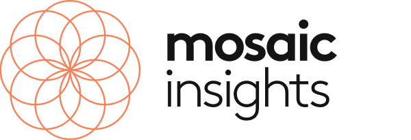

Faculty of Architecture, Building and Planning
University of Melbourne, 2016-Present.
• Deputy Director
Transport, Health and Urban Systems (THUS) research lab
Research Areas
Research in urban design, transport, health, micro-climates, and urban green space typology using neural network machine learning, agent based modelling, and climate modelling.
Software engineering using Java J2EE for application development and architecture.
Affiliations

Transport, Health and Urban Systems (THUS) research lab

ARC Centre of Excellence for Children and Families
over the Life Course (Life Course Centre)

Urban Forests for Resilient Communities, Climate and Environment (UrbanFORCCE)

B-KODE, Urban climatologist: external partner

Mosaic Insights/Alluvium Group, external partner
Biography
Kerry's research currently focuses on the investigation of urban factors impacting the accessibility of active transport, assessing the impacts of urban vegetation on transport, health, and micro-climates, and using artificial intelligence, especially deep learning using neural networks, to assess the influence of urban characteristics on urban environments and ultimately on the people who live there. Kerry previously worked as a senior and consulting software engineer in Colorado, New York, and London focusing on building enterprise level multi-tiered work flow applications. Kerry maintains membership in the International Association for Urban Climate (IAUC) and the Australian Meteorological and Oceanographic Society (AMOS).
Contact
Room 306, Level 3, Melbourne School of Design (Building 133), The University of Melbourne, Victoria 3010 AustraliaEmail / Mastodon / Research Gate / Google Scholar
 University of Melbourne /
Linkedin
University of Melbourne /
Linkedin
 eBird /
Ebird sightings 2004-present
eBird /
Ebird sightings 2004-present
Current CV /
ORCID /
Lens.org /
Open Alex
Qualifications
- PhD., March 2017, Monash University.
- Master of Enviromental Sustainability, 2011, Monash University.
- ACS PIM 2, Group B, Australian Computer Society, 23 April 2008
- Sun Certified Programmer for the Java 2 Platform 1.4, 5 January 2005
- Bachelor of Arts (English / Film Studies), 1990, University of Colorado Boulder.
Previous positions
Research Fellow, School of Earth, Atmosphere and Environment, Monash University/CRC for Water Sensitive Cities, 2016-2021.
LexisNexis/Reed Elsevier-London, UK; Colorado, USA, Consulting Software Engineer, Nov 2000 to Aug 2008: Java J2EE engineering and design to develop enterprise publishing process flow applications.